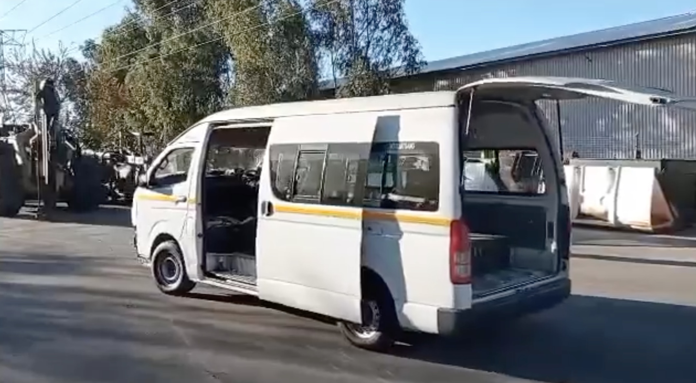

Aenean ornare velit lacus, ac varius enim lorem ullamcorper dolore aliquam.

Chris' is currently researching technical and economic challenges associated with public transport electrification in the developing world in his PhD thesis "Technoeconomic assessment of paratransit in Sub-Saharan Africa". He is in partnership with Stellenbosch University in the development of the first commercial battery electric retrofit for minibus taxis, which are the main mode of transport in sub-Saharan Africa.
In the future, Chris plans to expand his work into other energy systems, help building technologies and ways to bring energy to the developing world.
Paratransit, in particular the minibus taxi, is the mainstay of public transport in sub-Saharan Africa. These vehicles are often second-hand, ageing, fuel inefficient, and expensive to operate - issues that electrification can ameliorate. However, modeling and planning large-scale transitions to electric paratransit require reliable estimates of vehicle energy consumption. This paper provides such estimates by applying a vehicle kinetic model to per-second GPS data gathered on minibus taxis. Data include 62 trips across three routes with different driving conditions near Stellenbosch, South Africa. We find a range of energy consumption from 0.29 to 0.51 kWh/km (mean = 0.39 kWh/km). Past estimates in literature relied on per-minute GPS data, which we show leads to inaccurate energy consumption estimates. We recommend new kWh/km values for modeling vehicle operations and grid impact, and discuss how future work can utilize our analysis to advance the transition to electric paratransit sub-Saharan Africa.
Sub-Saharan Africa (SSA) is faced with the challenge to integrate e-mobility into its paratransit (its informal mass transit). Old, unsafe, fuel-inefficient, polluting minibus taxis are the cornerstone of daily commuting for millions in the region. Planning for electrification requires accurate high-frequency mobility data, which is currently unavailable. We analyse and improve on existing simulation models, which predict the energy usage with a micro-traffic simulation, SUMO, that up-samples low-frequency mobility data. We show that, compared to using measured mobility data, the current simulation approach overestimates energy expenditure. Results show a mean energy expenditure per distance overestimation of 14%, and mean energy per trip overestimation of 46%. We identify and virtualisation errors in the current driver and infrastructure models, and identify shortcomings of imposing a virtual road network with simulation software in the SSA context. We recommend and demonstrate virtualisation improvements for accurate electro-mobility planning in future.
Paratransit plays a critical role in meeting transportation needs in many cities in sub-Saharan Africa (SSA). However, it faces deep issues related to pollution, congestion, accidents, and lack of infrastructure. Understanding the driving patterns of paratransit in SSA can provide valuable insights into the transportation challenges faced in the region, which is particularly relevant given the increasing focus on sustainable transportation solutions in Africa. Representative driving cycles, which provide a realistic simulation of the driving conditions a vehicle is likely to encounter, are key to framing policies for efficient transportation management, vehicle design, and urban and regional planning. However, cycle development has been limited in SSA due to a lack of data and standardized testing procedures. This study develops a representative driving cycle using GPS data gathered on paratransit vehicles traveling around Stellenbosch, South Africa, providing a benchmark for evaluation and a platform for further research and testing in SSA's dominant transport industry. A novel time series shape-based clustering methodology is employed that all combines dynamic time warping and mixed integer programming to cluster micro-trips of varying length based on their time series shapes. Representative segments from each cluster are stitched together with a maximum likelihood approach to curate the final cycle. By including transients from the measured data in cycle development, this approach to representative driving cycle development is particularly suited for the notoriously unconventional and aggressive driving style of paratransit.
Paratransit provides the majority of road transport in South Africa and many other countries in the sub-Saharan African region. However, perceptions of electric vehicles (EV) and the factors that influence EV adoption intentions for paratransit owners and drivers have yet to be explored. The aim of this study is to provide insights that can inform policies and strategies to promote EVs in the region. To achieve this, we collected 4,452 survey responses from paratransit owners and drivers in South Africa. Only 38\% of respondents expressed a willingness to purchase an EV when they become available. Using structural equation modeling, we test eleven hypotheses regarding the factors that influence EV adoption intention, based on an innovative integrated framework of consumer behavior. The results show that risk perceptions, environmental considerations and perception of cost have the strongest influence on EV adoption intention although many factors come into play, with ten out of the eleven hypotheses being supported. The most salient takeaway from the model output is that interventions that emphasize safety and business advantages of EVs will be the most effective at improving EV adoption intention, but that a diversity of thoughtful approaches will be necessary to ensure significant lasting change in this area. Finally, we use the coefficients from the structural model to simulate the effects of example interventions on EV adoption intention, and offer sensible guidelines for formulating targeted promotional strategies that will address the principal concerns of paratransit owners and drivers regarding EVs.
Aenean ornare velit lacus, ac varius enim lorem ullamcorper dolore aliquam.

Aenean ornare velit lacus, ac varius enim lorem ullamcorper dolore aliquam.

Aenean ornare velit lacus, ac varius enim lorem ullamcorper dolore aliquam.
Sed varius enim lorem ullamcorper dolore aliquam aenean ornare velit lacus, ac varius enim lorem ullamcorper dolore. Proin sed aliquam facilisis ante interdum. Sed nulla amet lorem feugiat tempus aliquam.